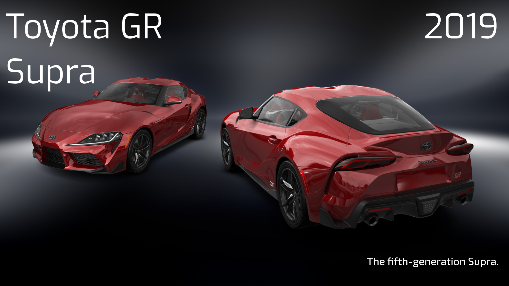

The Toyota GR Supra (model code J29/DB or A90/A91 for marketing purposes) is a sports car manufactured by Magna Steyr for Toyota since 2019. The fifth-generation Supra, the GR Supra was sold under and developed by Toyota Gazoo Racing (TGR) brand in collaboration with BMW. It is the successor of the A80 Supra, which ceased production in 2002.
TThe GR Supra rides on a platform developed by Toyota and BMW, with a short wheelbase, wide track, and low centre of gravity, that also underpins the G29 BMW Z4. Initially, BMW considered using a pre-existing platform of their own to underpin the new Supra, but chief engineer Tetsuya Tada declined.Both cars are manufactured at the Magna Steyr plant in Graz, Austria..
TThe fifth-generation Supra uses BMW model code conventions, designated as a J29 series with DB model codes. However, Toyota used the "A90" and "A91" code for promotional and marketing materials for the fifth-generation Supra to maintain continuity from previous Supra generations.
In October 2025, Toyota confirmed that the production of the GR Supra officially ended in March of 2026 after 7 years of production.
Motor Trend had reported that a possible Supra successor could be based on the FT-HS (Future Toyota-Hybrid Sport, which debuted at the 2007 North American International Auto Show. The publication also reported that the fifth generation of the Supra could be powered by a 3.5-litre V-6 hybrid system generating over 298 kW (400 hp; 405 PS). Toyota quoted that it was not rushing for the Supra successor but instead was waiting to see how the sales and interests of the GT86/FR-S went.
In 2010, Toyota applied for a trademark for the Supra name. The trademark had to be used within three years for it to be valid. In December 2011, Autoguide reported a possible Supra replacement that would sit above the GT86. Tetsuya Tada, the chief engineer of the Toyota 86/Scion FR-S told reporters in Germany in 2012 "the president (Akio Toyoda) has asked me to make a successor to the Supra as soon as possible.”
In late 2013, AutoBlog reported a Supra successor concept would be making its debut at the January 2014 North American International Auto Show. On 13 January, Toyota unveiled its new FT-1 concept car. Little is known about this new concept car; other than that it has a front engine and rear wheel drive layout. Toyota also stated that their new concept car draws inspiration from Toyota's past sports cars like the 2000GT, Supra, MR-2 and the 2007 FT-HS concept car. Toyota did not state whether the FT-1 would use the Supra name, or if it was even bound for production. However, Toyota did state if the FT-1 is approved from production, a price tag of around US$60,000 was to be expected for each unit. Upon the car's reveal, chief designer—Nobuo Nakamura—confirmed that the FT-1's design was used for inspiration for the Supra but the two cars differ in many ways. The production Supra was smaller and more of a pure sports car design, as opposed to the FT-1 being a larger grand tourer. According to Akio Toyoda, the new Supra's design and performance identity were inspired by the Toyota 2000GT.The interior design, layout, and parts (like the materials, seats, and steering wheel) were also done by Toyota, while only small interior switchgear come from BMW.
On 10 February 2014, Toyota submitted an application to the United States Patent and Trademark Office to renew the Supra trademark. In June 2016, a trademark application for the Supra nameplate was filed with the European Union Intellectual Property Office. According to Autocar, the new Supra was set to debut in 2018. The publication reported that the car would likely feature a rear wheel drive; and four-cylinder engines were expected to be available, and it had been confirmed that the car would offer a turbocharged inline-6 engine. It was believed that the engines would be supplied by BMW. Kleine Zeitung reported that the new jointly developed Supra will be produced at a Magna Steyr facility near Graz, Austria, alongside the BMW Z4 (G29). Although the sports car's name was yet to be officially confirmed, Toyota global chief engineer Tetsuya Tada said that it will likely carry the nameplate Supra, due to its historical significance to the nameplate. The final decision regarding the car's name was not made until the later stages of production.
On 12 July 2018, a pre-production version of the Supra was unveiled with a camouflage paint scheme at the Goodwood Festival of Speed. The car was confirmed to be a collaboration between Toyota and BMW with the new BMW Z4 (G29), but that the Supra is intended to be "much more hardcore and track-focused". Additionally, it was noted that the Supra was specifically engineered for an ideal 50–50 front-rear weight distribution. Tada also disclosed that the Supra was developed with benchmarking against the Porsche Cayman S (982), akin to the previous generation Supra's rivalry with the Porsche 968.
The fifth-generation Supra was unveiled at the January 2019 North American International Auto Show in Detroit. The launch marked a 17-year hiatus since the previous generation was last sold. It was unveiled by Toyota CEO Akio Toyoda, who announced the Supra was tuned and developed with extensive testing at the Nürburgring, and how its performance and design lineage can be traced to the famed 2000GT. Two-time Formula 1 champion and Toyota Gazoo Racing driver Fernando Alonso was also present to help launch the Supra. The European launch was held at the 2019 Geneva International Motor Show.
The first production model was auctioned at a price of US$2.1 million at a Barrett-Jackson auction to Craig Jackson (chairman and CEO of the Barrett-Jackson auction house) in January 2019, with 100% of the money going to the American Heart Association and the Bob Woodruff Foundation.The auction car has a one-off matte grey exterior colour which is not offered on the standard Supra, as well as a red interior, metallic black five-bolt wheels, red wing mirrors, a signature from Toyota CEO Akio Toyoda on the dashboard and VIN 20201.
The Supra went on sale in Japan on 17 May 2019. In the United States, sales began on 22 July 2019 with a starting base price tag of US$49,990. In Australia, sales began on 2 September 2019.
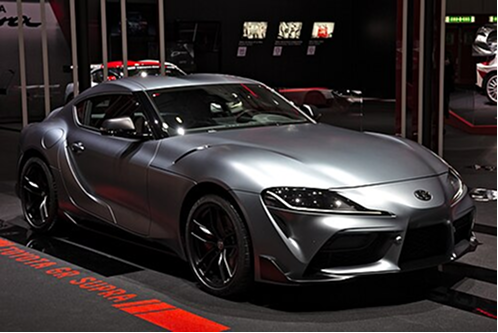
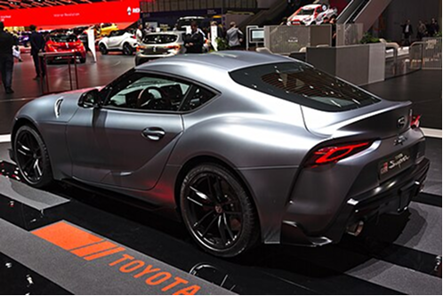
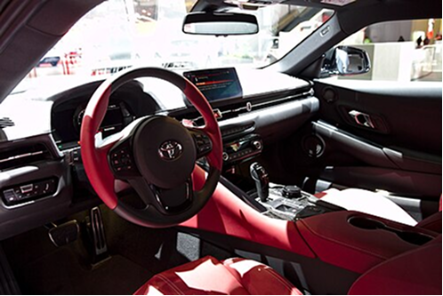
At launch in the US, Toyota announced they would release a special edition for each model year of the fifth-generation Supra's release cycle. To date, all special editions are based on the 3.0 Premium, and offer distinct details from standard models, while being produced in limited quantities.
In 2019, for the 2020 model year, the first 1,500 cars produced for the US were released as special Launch Edition variants and are offered in three colours: Absolute Zero White, Nocturnal Black and Renaissance Red 2.0. Cars that have the white or black exterior colour have the same red interior as the auction car, which is only offered in the Launch Edition, while the red cars have a black interior. All Launch Edition cars have red coloured wing mirrors, all-black wheels, and an individually-numbered carbon fibre plaque with a replica of Akio Toyoda's signature fixed to the dashboard, mirroring the auction car. In 2020, for the 2021 model year, a new A91 Edition was released, marking the updated platform featuring the new higher output 3-litre engine, and was limited to 1,000 units. The A91 naming implies a new model from the A90, due to the updated engine, but the chassis code remains the same. The A91 Edition is offered in two colours: an exclusive Refraction Blue and Nocturnal Black, both featuring exclusive matte black stripes on the C-pillars and a carbon fibre rear lip spoiler. It features an exclusive black leather and Alcantara interior with blue stitching and accents. It also includes matte black wheels, carbon fibre mirror caps, and a custom stitched key cover matching the interior.
The A91-CF Edition was released in 2021, for the 2022 model year, limited to only 600 units. The A91-CF Edition is named "CF" for the special carbon fibre body kit consisting of a front splitter, side skirts, rear spats, and a rear duckbill spoiler. Additionally, matte black wheels, and a red and black leather/Alcantara interior with special stitching is included. It was released in Absolute Zero White, Nitro Yellow, and matte Phantom Gray paint colour options.
With the launch of a new 6-speed manual transmission offering in the Supra in 2022 for the 2023 model year, a limited A91-MT Edition was released with a limited run of 500 units. In addition to the new manual transmission, it is offered in two exclusive colours, Matte White and CU Later Gray, and an exclusive Cognac tan leather interior. The A91-MT Edition also includes exclusive red badging, red GR engine bay strut brace, and Frozen Gunmetal Gray wheels.
In 2023, for the 2024 model year, the 45th Anniversary Edition was released in North America with a limited run of 900 units, to mark the 45th anniversary of the launch of the first Supra, the 1978 Celica Supra. The model is offered in an exclusive Mikan Blast orange paint colour along with Absolute Zero white, and has an exclusive black side panel stripe graphic with a cutout Supra logo. It features a manually-adjustable rear spoiler which rises approximately 75 mm (3 inches) above the rear decklid, with an adjustment screw to change the angle of the spoiler for different effects on downforce per the driver's preference. The 45th Anniversary Edition also features matte-black 19-inch aluminium wheels and black painted brake callipers with a GR logo graphic. The orange colour and styling are stated by Toyota to be a tribute towards a custom Mk IV Supra of "big-screen fame", which is reputed to be the similarly orange Mk IV Supra featured in the 2001 film The Fast and the Furious.
In 2025, Toyota announced that the 2026 model year would be the final model year of this generation, announcing the Final Edition with production ending in March 2026. It will use the standard US engine with 285 kW (382 hp), even though the Final Edition in other parts of the world will have a 320 kW (429 hp) engine.
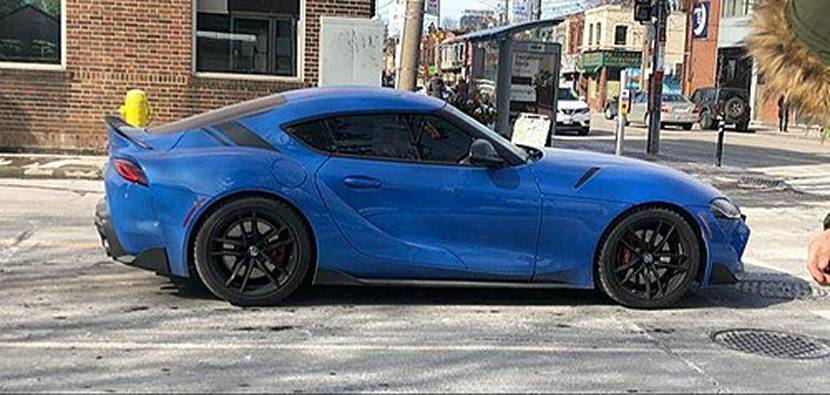
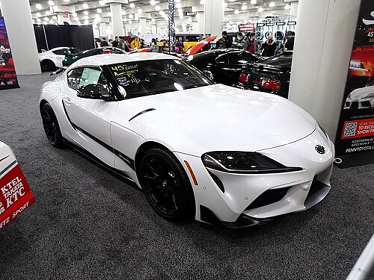
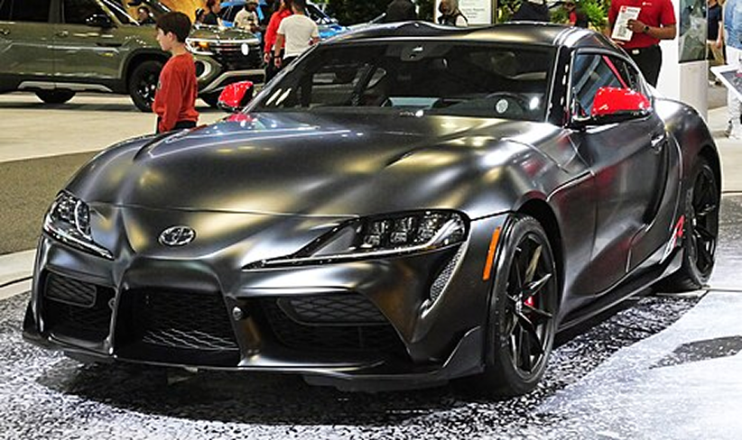
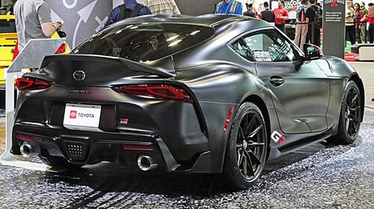
The GR Supra Racing Concept is a concept racing car that previews the racing version of the fifth generation Supra.It debuted at the March 2018 Geneva Motor Show.The design was inspired from the 2014 FT-1 concept. It features a lowered suspension with Toyota OEM parts, BBS centre-lock racing wheels, Brembo racing calipers, a full roll cage and fire extinguisher system, a stripped out interior, Michelin track tyres and a centre exit racing exhaust. It also features carbon fibre for the bonnet, splitter, diffuser, mirror caps, side skirts, wing and bumpers.It is unknown what engine powered the concept.
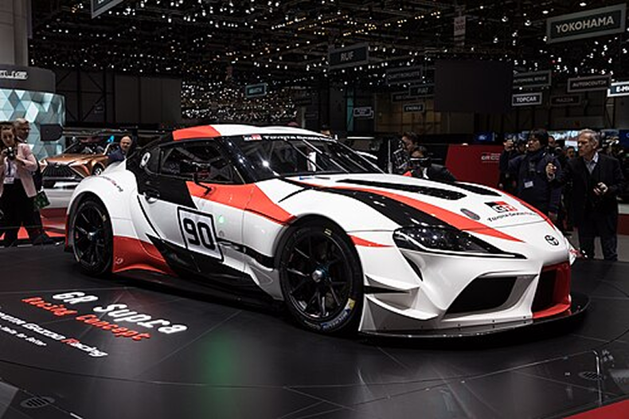
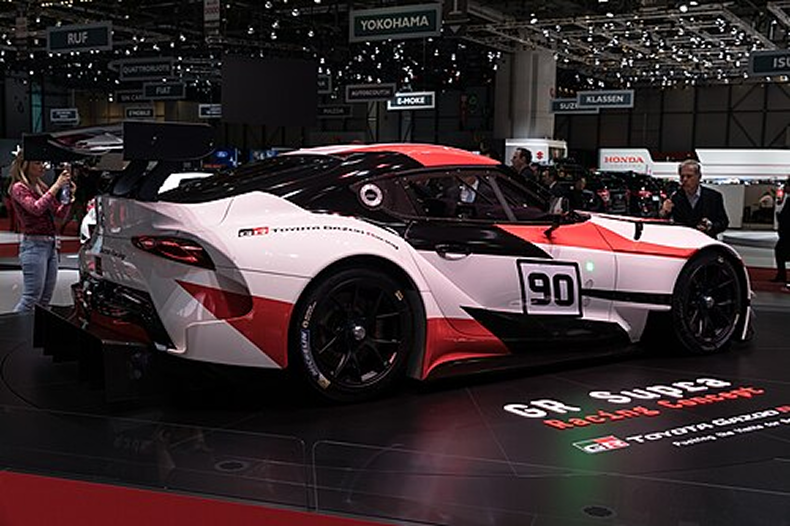
The GR Supra GT4 Concept is a concept racing car that was built as a racing study model for participating in the European GT4 racing series, as well as other GT4 class races around the world.It was first shown at the March 2019 Geneva Motor Show.Upgrades include reduced weight, upgraded brakes and suspension and the addition of a rear wing and roll cage.
Toyota later unveiled a production model in October 2019, with an engine rated at 320 kW (429 hp; 435 PS). It is primarily designed for customer racing, meaning it is able to be purchased and raced by teams that are not factory-backed. It has a seven-speed automatic, as opposed to the eight-speed unit on standard road going models, and an Akrapovič exhaust system. Inside, an FIA-standard racing seat is present featuring a six-point harness, along with a carbon fibre instrument cluster. A Magneti Marelli engine management system, motorsport ABS, data logger and fire extinguisher are standard, while an illuminated car number is optional. The GT4 is equipped with Brembo six-piston front and four-piston rear brake calipers and KW dampers. The GT4 is fitted with Pirelli P Zero racing tyres and OZ wheels. The roll cage and rear wing are also carried over from the concept. Sales began in Europe in March 2020, followed by North America in August 2020 and Japan/Southeast Asia in October 2020.
Toyota released the updated GR Supra GT4 in October 2022, named the GR Supra GT4 EVO, with upgrades focused on engine performance, handling, and braking. The engine has been updated with increased power, an updated torque curve with maximum torque of up to 660 N⋅m (487 lb⋅ft), and improved cooling. Additionally, the brake system design has been improved, new ABS settings have been added, and the KW dampers and anti-roll bar specification have been updated for higher cornering speeds and improved handling. Owners of the previous GT4 will have the option to upgrade to the new GT4 EVO specification, if desired. The GT4 EVO will make its debut at the 2023 24 Hours of Daytona. Sales began October 2022 internationally, at a price of €186,000
As of 2022, more than 50 GR Supra GT4 cars have been used in GT4 class races. They have earned victories in 11 national and international GT4 championships, and over 100 podium finishes. In August 2022, the GR Supra GT4 earned its 50th class win in a major championship, at the GT World Challenge Asia at Sportsland Sugo in Japan.
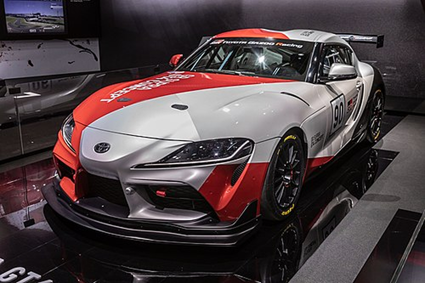
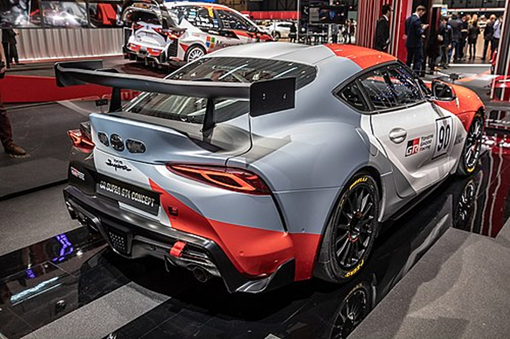
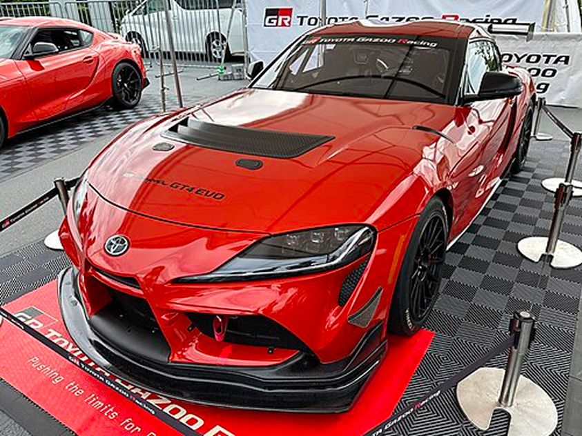
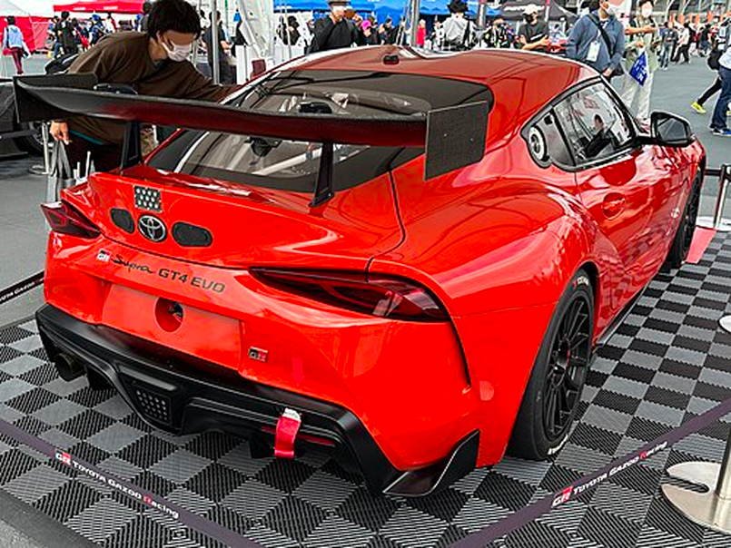
Toyota announced the use of the Toyota Supra in the Japanese Super GT racing series from 2020 onward for Toyota Gazoo Racing.As of 2025, the GR Supra GT500 has won 24 races and 4 championships, and the GR Supra GT300 has won 8 races and 1 championship in their first 5 seasons in the Super GT Championship.
The GR Supra GT500 is used for the top class in the championship racing series, the GT500 class, alongside the GR Supra GT300 in the GT300 class. It has been used from the 2020 racing series onward for Toyota Gazoo Racing, replacing the Lexus LC500 GT500 and Toyota 86 MC (GT300). The GR Supra GT500 features a 500 kW (670 hp) 2.0-litre Toyota RI4A turbo four-cylinder engine, while the GR Supra GT300 features the 5.4-litre 2UR-GSE V8 engine according to JAF-GT GT300 regulations.
In the 2021 Super GT Series, the Toyota GR Supra GT500 raced by TGR Team au TOM'S won the 2021 championship in the GT500 class, driven by Yuhi Sekiguchi and Sho Tsuboi. The team overcame a 16-point deficit in the final round of the season to win the championship.
The 2023 Super GT Series resulted in championship victories for the Toyota GR Supra in both classes. The GR Supra GT500 raced by TGR Team au TOM'S won the championship in the GT500 class, driven by Sho Tsuboi and Ritomo Miyata, while the GR Supra GT300 raced by Saitama Green Brave won the championship in the GT300 class, driven by Hiroki Yoshida and Kohta Kawaai.
TGR Team au TOM'S continued to win the championship in the GT500 class for two more consecutive years, in 2024 and 2025, with drivers Sho Tsuboi and Kenta Yamashita both years
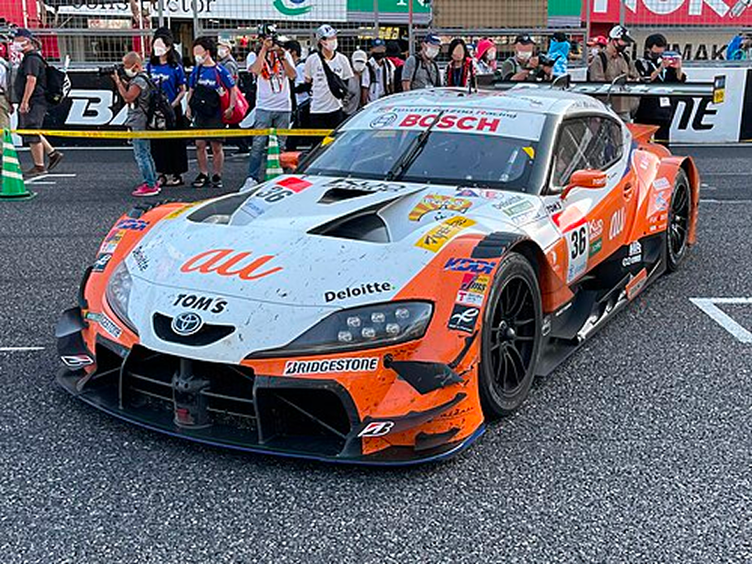
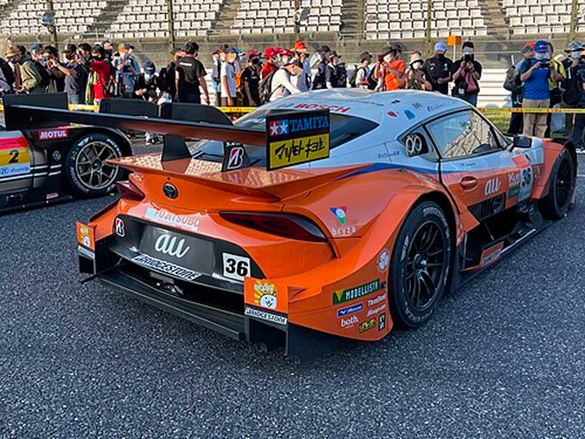
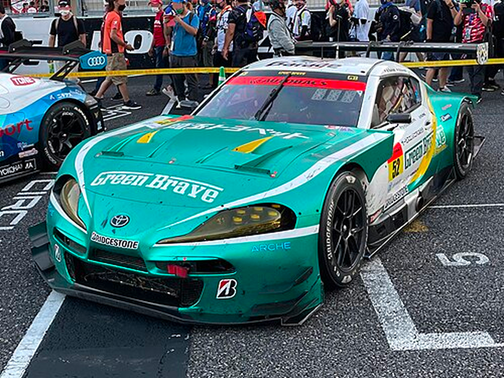
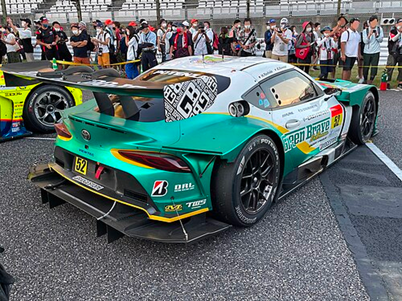
On 5 July 2018, Toyota Gazoo Racing announced that the Supra will race in the 2019 NASCAR Xfinity Series.[132] The new Supra made its NASCAR debut in February 2019.
On February 23, Christopher Bell of Joe Gibbs Racing scored the Supra's first NASCAR win at Atlanta.[134] The Supra has since won six out of the first 11 races of the 2019 season, including three from part-time driver Kyle Busch.
At the end of the 2021 season, Daniel Hemric drove his Supra to his first win at Phoenix to claim the championship.
In the 2022 NASCAR Xfinity Series, Ty Gibbs drove his Supra to 7 wins, claiming his first series championship.
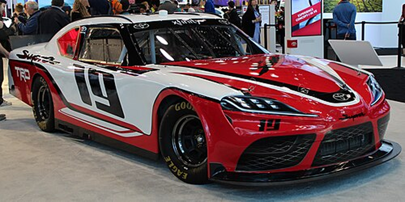
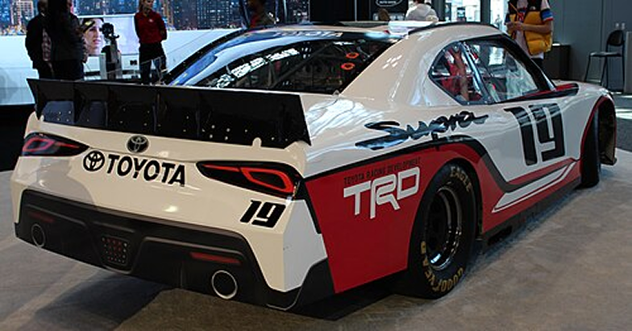